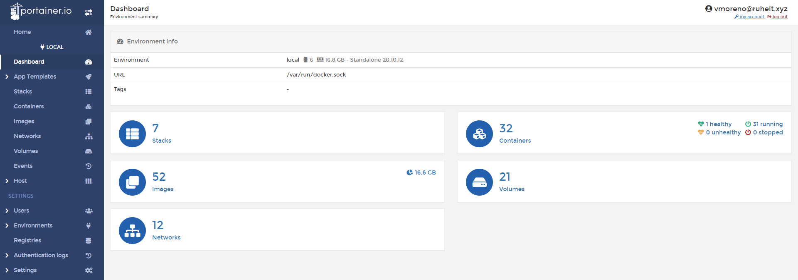
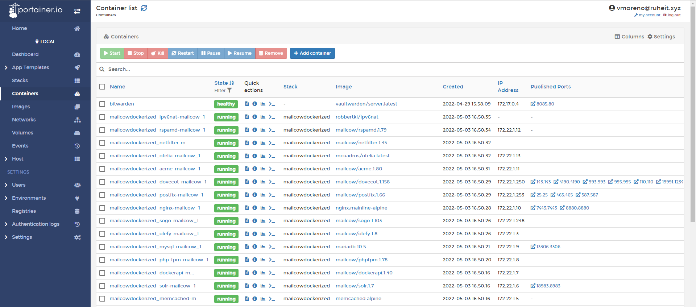
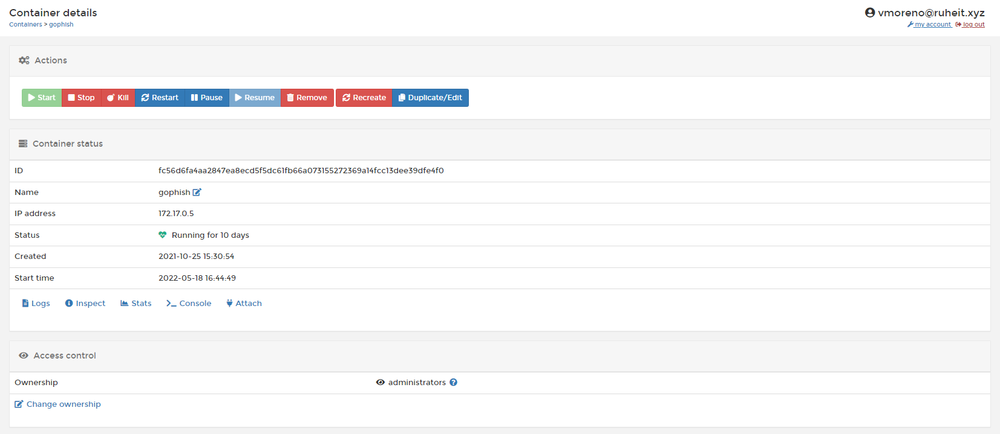
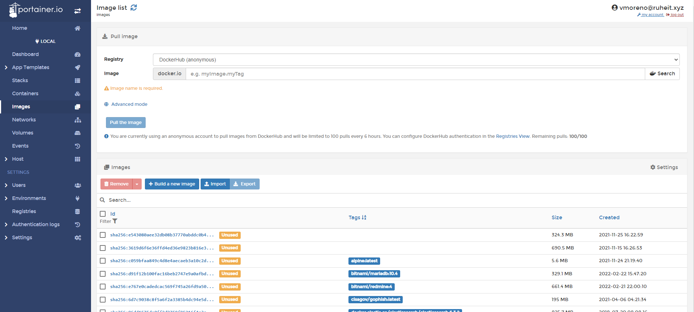
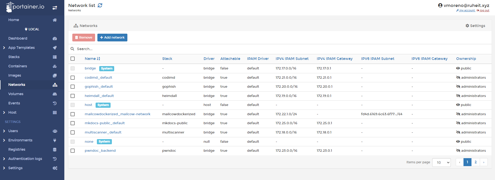
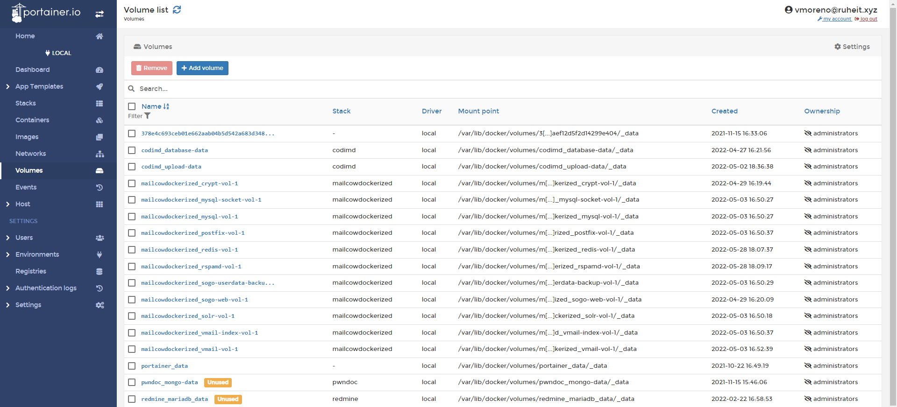

Portainer
Portainer es un gestor universal de contenedores, puede gestionar Kubernetes, Docker y Nomad.
Portainer se ejecuta como un contenedor de Docker, por lo que necesita que Docker esté instalado en la máquina donde vayamos a instalarlo.
Portainer puede conectarse a sus "nodos" de la siguiente manera:
- Local: a través del proceso sock de docker
- Edge Agent: se conecta al nodo a través de un agente de Portainer
- Azure: puede conectarse a clusters de Docker en Azure
Una de las grandes ventajas de Portainer es que a través del Portainer Edge Agent podemos centralizar la gestión de los nodos de docker de RuheIT desde un único lugar, lo que simplifica la gestión y la monitorización de estos.
Portainer permite el SSO con Azure AD, por lo que una vez más la autenticación es delegada a Azure AD, aumentando así la seguridad y unificación del login.
A través de Portainer, con grupos sincronizados de Azure AD, gestionamos el acceso (RBAC, role based access control) a los diferentes nodos y contenedores.
Instalación de Portainer
docker volume create portainer_data
docker run -d -p 9000:9000 -v /var/run/docker.sock:/var/run/docker.sock -v portainer_data:/data portainer/portainer
Interfaz de Portainer

Al abrir Portainer y seleccionar el nodo nos aparecerá el Dasboard.
En ella se muestra un resumen de manera visual de nuestro sistema de Docker:
- Número total de contenedores
- Número total de imágenes
- Número total de redes
- Número total de volúmenes
Esta sección es de gran utilidad para mostrarnos de manera global cual es el estado actual de Docker en nuestra máquina.
Contenedores

El menú de Containers, nos mostrará la lista de todos nuestros contenedores, y podremos ejecutar a golpe de click varias de las típicas instrucciones que solemos ejecutar a través de la línea de comandos, como arrancarlos, pararlos o eliminarlos.

También podemos ver detalles del propio contenedor. Si hacemos click en el nombre de un contenedor, entonces podemos conocer la información del mismo.
Aquí dentro podemos ver:
- Todas las operaciones mas habituales como parar, pausar, matar o borrar el contenedor
- Ver informaciones del contenedor (
docker inspect) - Crear una imagen nueva desde el mismo contenedor y añadirla a un registro (
docker commit) - Ver los logs del contenedor (
docker logs) - Ver las estadísticas del contenedor (
docker stats) - Entrar en el contenedor pudiendo elegir el shell o el usuario (
docker exec) - Conectar o desconectar el contenedor con una red (
docker network connect)
Imágenes

La sección de imágenes sería el equivalente a docker images, desde aquí podemos ver o eliminar las imágenes disponibles.
Una de las ventajas respecto a la línea de comandos es que:
- Podemos ordenar la lista por tags
- Podemos ordenar la lista por tamaño
- Nos muestra las imágenes que no usamos
Networks

Desde la sección de Networks tenemos la posibilidad de ver las redes que ya tenemos creadas, podemos eliminarlas o añadir más desde el Wizard.
Volúmenes

Desde Volumes, podemos ver:
- Volúmenes usados y no usados
- Ruta en el FS del host
- Stack (compose) al que pertenecen